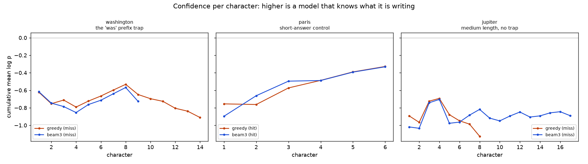
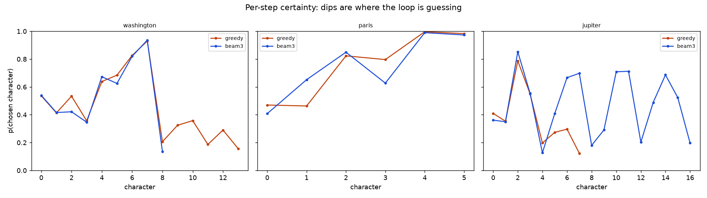
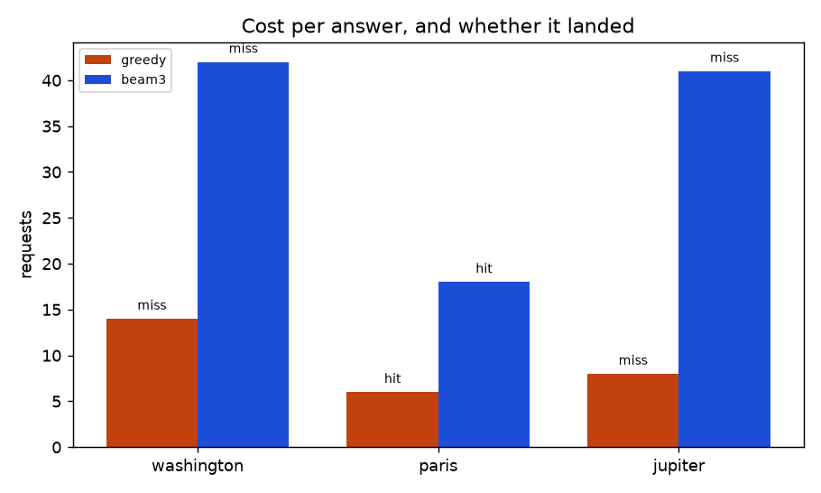

jev-llm · A/B · 20 Sep 2026 · 129 requests
Keeping three candidate answers alive cost 3.6× the requests and got exactly the same one question right. Two upstream bugs turned out to matter more.
The criteria were set before the run: beam search wins only if washington
appears where greedy produced garbage, and the short-answer control does not
regress. Neither arm ever reached washington. Beam search also made the
jupiter answer measurably worse.
Results
| Arm | Question | Expected | Output | Req | |
|---|---|---|---|---|---|
| greedy | capital of united states | washington | capital ca p . | 14 | miss |
| greedy | capital of france | paris | paris. | 6 | hit |
| greedy | largest planet | jupiter | jev pa . | 8 | miss |
| beam 3 | capital of united states | washington | capital . | 42 | miss |
| beam 3 | capital of france | paris | paris. | 18 | hit |
| beam 3 | largest planet | jupiter | jev jev jev jev . | 41 | miss |
Finding 1 — the decisive one
jev
Both arms answered largest planet with jev. Every character
request carries about_you, which reads
“Your name is Jev — spelled j, e, v.”
jupiter and jev share a first letter. At step 0 the model
scored j=0.41 over p=0.25 — reasonable either way. At step 1
it took e=0.35 over u=0.15, and the answer was gone. The spelling
is sitting right there in the state, on every single call.
Beam 3 made this worse rather than better: with four jev-prefixed branches
all scoring well, it produced jev jev jev jev . — beam search faithfully
amplifying a contaminated distribution.
jev pa .
miss
jev jev jev jev .
miss
Finding 2
Beams rank by logprob / steps1.0 — the mean. Stopping is
cheap under that rule: a short answer made of confident characters beats a long one
that must pay for every uncertain step it takes.
Both arms spelled capital cleanly and confidently
(l=0.83, then space=0.93). Then the distribution went flat.
Greedy stumbled on for six more characters; beam 3 took STOP at
0.14 — the single highest option — and declared capital .
finished. It spent 42 requests to produce a shorter wrong answer than greedy's 14.
capital ca p .
miss
capital .
miss
Finding 3 — against my own prediction
The case for beam search was the was → washington trap:
a partial word that is itself a real word, where the space scored 0.87 against 0.05
for the letter that continues the real answer.
In this run neither arm got that far. Both wrote capital and stalled
on the flat step after it — c=0.21, STOP=0.16, a=0.12, n=0.08. The
mechanism beam search was supposed to repair never arose, so this test does not
actually falsify it. What it establishes is narrower and still decisive: on the
questions that do fail today, beam search costs 3.6× and changes nothing.
Charts

paris and sag on the other two — beam 3 sits
slightly higher throughout (−0.649 against −0.788) while being no more correct,
which is the clearest sign the metric and the goal have come apart.

washington: both arms hold above 0.4 through
capital, then fall off a cliff at position 8 and never recover.

paris,
cost 6 requests greedy and 18 with beams — three times the price for the identical
six-character answer.
What to do next
about_you only when
the question is actually about the model, or drop the “spelled j, e, v”
clause. Free, and it is the difference between jev and jupiter.Beam search is not disproven — it was never reached by the failure it was built for. It is simply not the next thing to pay for.